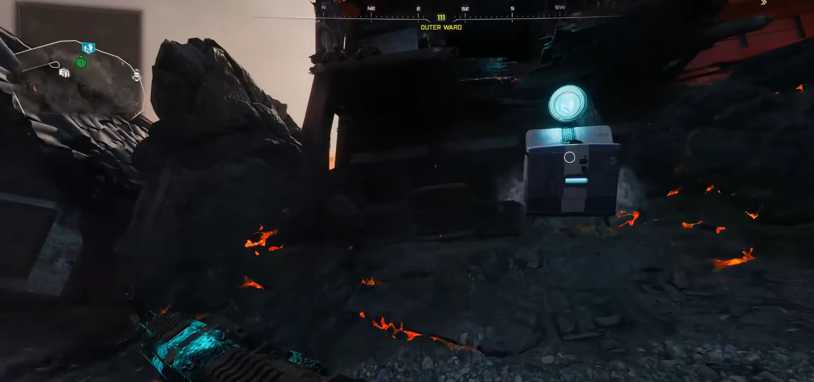
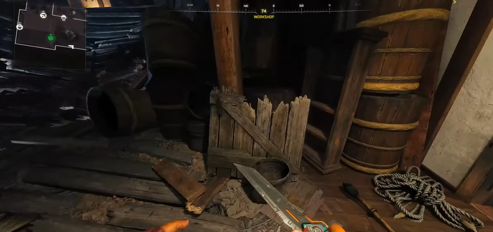
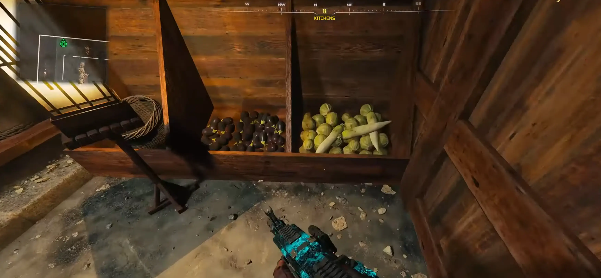
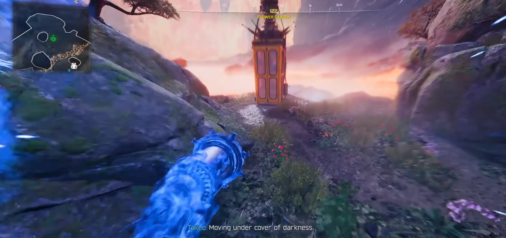
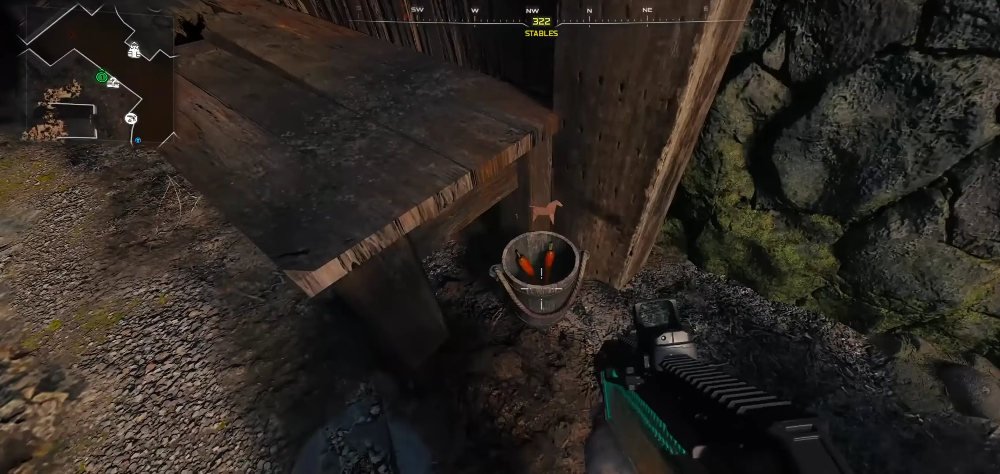

Musisz odnaleźć 4 marchewki ukryte na mapie. Możesz je zbierać w dowolnej kolejności:
Outer Ward (Zewnętrzny Dziedziniec): Szukaj beczki stojącej na szczycie skrzyni. Wskocz tam i zabierz marchewkę.

Workshop (Warsztat): Przejdź obok miejsca, gdzie pojawia się Mystery Box. Marchewka leży w wiadrze.

Kitchens (Kuchnie): Idź w stronę budynku za Blossom Tree (Kwitnące drzewo wiśni). Marchewka jest ukryta wśród kapust.

Flower Garden (Ogród kwiatowy): Przejdź przez most i udaj się na dół w stronę punktu ewakuacji (Exfill). Marchewka leży w roślinności obok kwiatów.

Wskazówka: Każda zebrana marchewka automatycznie pojawia się w specjalnym wiadrze w Stajniach.
KROK 2: Aktywacja Wyścigu
Gdy masz już wszystkie 4 marchewki, wróć do Stables (Stajnie) do wspomnianego wiadra.
Wejdź z nim w interakcję. Usłyszysz cytat Takeo o cierpliwości i skupieniu.
Nad wiadrem pojawi się mały, lewitujący konik – to znak, że wyścig właśnie się zaczął!

KROK 3: Tor Przeszkód i Parkour
Teraz musisz biec wyznaczoną trasą, goniąc konika. Pamiętaj, że goni Cię czas!
Boulders (Głazy): Uważaj na gigantyczne głazy, które będą bujać się na Twojej drodze. Jeśli Cię trafią, stracisz cenny czas.
Rings (Obręcze): Przebiegaj przez kolorowe obręcze, które wyznaczają trasę.
Lava Parkour: Będziesz musiał skakać po małych pluszowych siedziskach nad lawą. Jeśli spadniesz do ognia, wrócisz do ostatniego punktu kontrolnego (Checkpoint).
KROK 4: Rybia Masakra
Z lawy zaczną wyskakiwać gigantyczne ryby – musisz je omijać!
W pewnym momencie ryby zaczną nawet spadać z nieba przez portale. To totalna miazga, więc miej oczy dookoła głowy.
Meta i Nagrody
Wyścig kończy się, gdy wskoczysz w ostatni, zielony portal.
Twoja nagroda zależy od tego, jak szybko ukończysz trasę. Najlepszą nagrodą jest Gold Trophy (Złote Trofeum).
Możliwy łup: Darmowy Mystery Perk, Złom, Scorestreaki, a przy odrobinie szczęścia nawet Perma Perk.